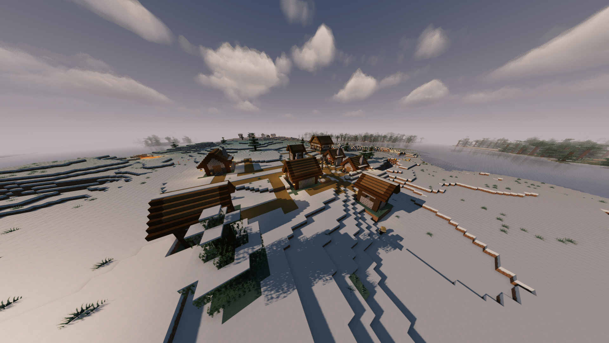

01 // WORLD GENERATION
Viking Villages
Discover dynamically generated Norse settlements across snowy biomes, complete with great halls, blast huts, and social centers. Each structure is pieced together via custom jigsaw pools and guarded by resident warriors.